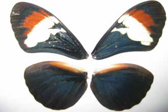
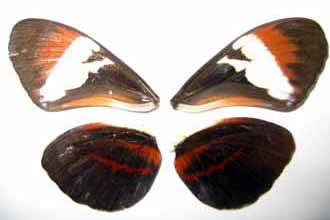

Hybrid between Heliconius melpomene melpomene and H. cydno cordula
Venezuela: Táchira, San Cristobal, Jardín Botánico de Táchira, 1060m
Collected by Jesús Mavárez, December 2003
© James Mallet
Return to table of specimens
To next specimen
To previous specimen
Last updated: 9 January 2004